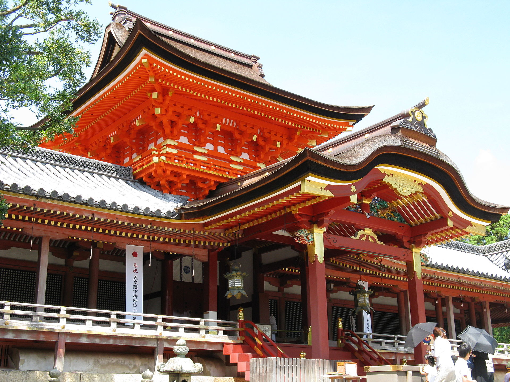

Voyage au pays des rêves… Le Japon.

Je suis partie au Japon 2 semaines au mois de septembre. C’était magique. Il n’y a pas d’autres mots pour décrire ce que j’ai vécu dans ce pays du soleil levant. Dans le prochain numéro de Lost Eden, je vous raconterais en détails mon séjour, avec des photos. Sinon, je vous souhaite à tous de pouvoir visiter le Japon un jour.
Arrivée au Japon… le décalage horaire est un peu difficile (+7h… ça change un peu, ça c’est sûr…). Après un peu de repos, me voilà dans les rues de Kyoto. Car je suis restée presque durant tout mon séjour à Kyoto… Les restaurants japonais sont présents partout. Il faut dire que ça coûte moins cher de manger au resto que de faire ses courses au Japon… Si, si, je vous assure. Exemple: 25F la pomme (à ce prix là, mieux ne vaut pas en manger tous les jours).
Kyoto est une ville sublime, entourée de montagnes. On se sent protégé dans la ville. Il n’y a pas de buildings ici. C’est interdit et je trouve que c’est une bonne chose. Kyoto est restée intacte, je pense que c’est cela qui fait le charme de ce lieu. J’ai visité les temples, qui sont d’une beauté incomparable. Il y règne un silence et une vie paisible… C’est très reposant, on se sent proche de la nature dans les temples. Le temple d’or est toujours visité qu’il s’agisse des étrangers ou des japonais.
Je suis aussi allée à Nara, une ville tout près de Kyoto. Là, la nature est proche de l’homme. Des daims se promènent en liberté dans les bois et près des temples. C’est merveilleux. L’homme proche de la nature, telle pourrait être ma description de Nara.
Au programme de Kyoto (A part la visite des temples): karaoke. Le karaoke se fait dans de petites salles au Japon, le “karaoke box”. Là, un grand choix de titres en japonais, en anglais, …et une dizaine en français (Eh oui! , il y a quand même des chansons en VF). Pour info, j’ai chanté Cat’s Eye en VO. C’est génial. Vu qu’on est dans de petites salles entre amis, le trac existe moins.
Je suis allée au Japon pour mes études. Car je travaille sur l’éducation japonaise. Lorsque l’on peut allier 2 passions entre elles et de faire de sa passion son métier, il n’y a rien de plus beau. Les Japonais sont des personnes très gentilles et d’un respect remarquable. On ne trouve pas ce genre d’attitude ici.
J’habitais dans une pension de famille (Un peu comme dans Maison Ikkoku). Les propriétaires étaient en bas et les étudiantes (Car c’était une pension réservée aux filles. Désolé messieurs…) avaient leur chambre et des cuisines à l’étage. Tout le monde prend son bain le soir, entre 7h et 11h du soir. L’eau est vue comme essentielle au Japon et le bain fait partie intégrante de la vie japonaise.
J’ai aussi eu la chance de pouvoir porter un kimono. Le vêtement est sublime et le porter, cela représentait un rêve pour moi. Le tissu est tellement joli. Les restaurants japonais sont excellents. Bien que l’on dise la cuisine réputée, je vous avoue que je préfère la cuisine japonaise… Ah ! Les sushis, les tempuras, quels délices! Le temple de Nara ou encore le jardin de pierres, tels sont les symboles de la beauté japonaise selon moi.
Après une dizaine de jours à Kyoto, je prends le Shinkansen (train japonais) pour aller à Tokyo. J’arrive à la gare et mon amie Yukiko m’attend. On dépose les bagages et on va dans le quartier de Shinjuku.
Là, je vois Shinjuku presque tel qu’il existe dans City Hunter. On y retrouve My City, l’immeuble géant et grand magasin, la gare de Shinjuku (Il n’y a pas de panneau XYZ. Du moins, je ne l’ai pas vu)… Beaucoup de monde dans la rue. Nous étions dimanche et les voitures ne circulaient pas dans les rues principales du quartier. Des animations diverses animaient le quartier.
Tokyo est tellement différente de Kyoto… A Tokyo, les buildings sont présents partout. C’est plus une ville où les hommes n’ont pas leur vraie place. Le côté humain et relationnel est presque inexistant. Tokyo est le lieu des buildings, je trouve. La pollution est très forte, je pense. Plus qu’à Paris d’ailleurs. On sent réellement un taux de pollution dans l’air.
Tokyo est une jolie ville la nuit, du point de vue du jeu des lumières, dû à la multitude des enseignes des immeubles.
Je ne suis restée qu’une journée à Tokyo, car il fallait que je rentre en France. Départ à l’aéroport de Narita. “Au revoir Japon. A bientôt”. Quelques larmes au moment du départ, car je me sentais tellement chez moi dans ce pays du soleil levant. Je reviendrais au Japon, car il y a pleins de choses que je n’ai pas eu le temps de faire: aller au sentô (bain public), jouer au Patchinko, voir de près le mont Fuji… Et tous les temples de Kyoto que je n’ai pas eu le temps de visiter.
Kyoto, ville des temples; Nara ville de Bouddha et Tokyo, ville des buildings… Le Japon aux différents visages est magnifique.
Je souhaite à chacun d’entre vous de pouvoir aller au Japon car même si j’ai essayé de retranscrire par mots ce que j’ai vécu au Japon, rien ne vaut le regard que chacun porte en allant dans ce pays.
Je voudrais remercier tous ceux qui m’ont aidé à aller au Japon, car ce voyage m’a beaucoup apporté. Un grand merci à Emi qui m’a aidé lorsque j’étais au Japon et qui m’a permis de me sentir chez moi dans ce pays. Merci à Yukiko et à M. Maehira. Et enfin, merci à tous les Japonais pour leur accueil si chaleureux.